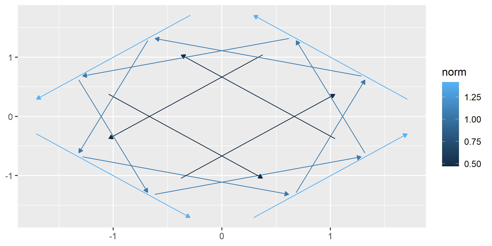
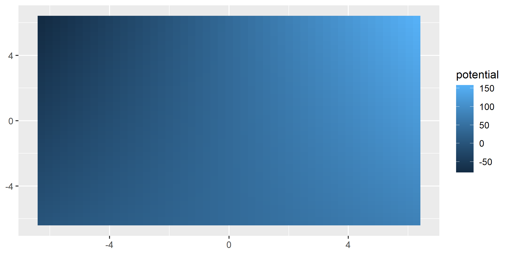
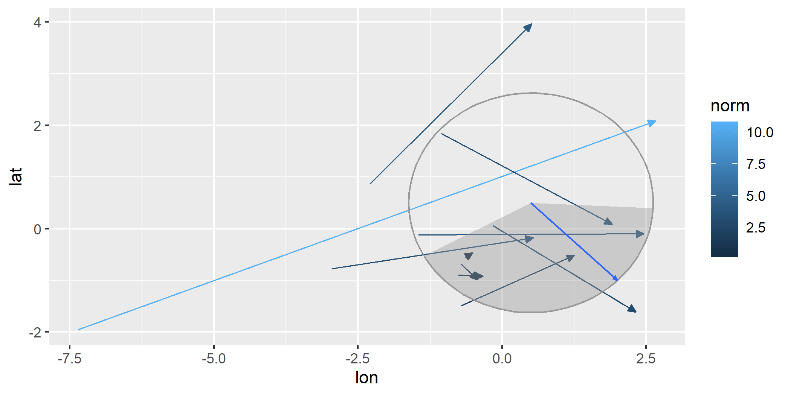

ggvfields is a powerful package for visualizing vector fields, stream plots, and related visualizations. It provides tools to explore directional data, including options for vector smoothing, gradient fields, potential visualizations, and dynamic flow representations.
Installation
Install ggvfields directly from GitHub:
remotes::install_github("dusty-turner/ggvfields")Load the package in R:
library("ggvfields")
#> Loading required package: ggplot2
options(ggplot2.continuous.colour="viridis")Generate sample wind data:
set.seed(1234)
n <- 10
wind_data <- data.frame(
lon = rnorm(n),
lat = rnorm(n),
dir = runif(n, -pi/2, pi/2),
spd = rchisq(n, df = 2)
) |>
within({
fx <- spd * cos(dir) # Compute the x-component of the vector
fy <- spd * sin(dir) # Compute the y-component of the vector
xend <- lon + fx # Compute the end x-coordinate
yend <- lat + fy # Compute the end y-coordinate
})
round(wind_data, digits = 2)
#> lon lat dir spd yend xend fy fx
#> 1 -1.21 -0.48 0.17 3.55 0.11 2.29 0.59 3.50
#> 2 0.28 -1.00 0.46 2.19 -0.03 2.24 0.97 1.96
#> 3 1.08 -0.78 -0.59 2.99 -2.44 3.56 -1.66 2.48
#> 4 -2.35 0.06 0.38 10.81 4.10 7.68 4.04 10.03
#> 5 0.43 0.96 -0.53 3.45 -0.80 3.40 -1.76 2.97
#> 6 0.51 -0.11 0.01 3.91 -0.09 4.41 0.02 3.91
#> 7 -0.57 -0.51 0.56 0.16 -0.43 -0.44 0.08 0.13
#> 8 -0.55 -0.91 -0.05 0.42 -0.93 -0.12 -0.02 0.42
#> 9 -0.56 -0.84 -0.80 0.42 -1.14 -0.28 -0.30 0.29
#> 10 -0.89 2.42 0.83 4.17 5.51 1.91 3.09 2.80Core Features
geom_vector and geom_vector2
These functions allow for flexible visualizations of vector data.
-
geom_vector: By default, this maps the norm (magnitude) of a vector to its color. This helps compare relative magnitudes visually through color gradients. Users do not need to explicitly specify this unless overriding the default behavior.
ggplot(wind_data) +
geom_vector(aes(x = lon, y = lat, xend = xend, yend = yend)) 
geom_vector also supports both xend/yend format as well as fx/fy format.
ggplot(wind_data) +
geom_vector(aes(x = lon, y = lat, fx = fx, fy = fy)) 
-
geom_vector2: Maps the norm of a vector directly to its length. This provides a more intuitive representation of magnitude. This is done by mappinglength = after_stat(norm)by default.
ggplot(wind_data) +
geom_vector2(aes(x = lon, y = lat, fx = fx, fy = fy)) 
Why Length Mapping Matters
Mapping vector lengths to their norms allows viewers to immediately understand magnitude differences without relying solely on color.
The norm is calculated .
This feature of geom_vector2 enhances interpretability by using actual vector lengths to represent magnitude. The legend reflects the scaling and ensures consistent interpretation.
Polar Coordinates Support
Both geom_vector and geom_vector2 also support polar coordinates, where vectors are specified using magnitude (distance) and direction (angle). Instead of providing Cartesian components (fx, fy or xend, yend), users can directly supply polar data. This feature simplifies workflows for directional data and works for all subsequent relevant functions that handle polar coordinates.
Polar coordinates can be visualized like this:
ggplot(wind_data) +
geom_vector(aes(x = lon, y = lat, distance = spd, angle = dir)) 
Normalize and Center
Two important options in geom_vector and subsequent functions are normalize and center - both of which default to TRUE. These options help control the visual representation of vectors:
normalize: When set toTRUE, this option scales each vector to have a unit length, which can help avoid overplotting in dense vector fields. This is especially useful when the direction of vectors is more important than their magnitude. However, it’s important to note that normalize is different from mapping the norm of the vector to the length aesthetic. While normalization ensures that all vectors are visually uniform in length, mapping the norm to length preserves the relative differences in magnitude by varying the vector lengths based on their actual norms.center: By default,centeris also set toTRUE, meaning the midpoint of each vector is placed at the corresponding (x,y) coordinate, effectively “centering” the vector on the point. When center isFALSE, the base of the vector is anchored at the (x,y) point, and the vector extends outward from there.
The example below turns off this default behavior:
ggplot(wind_data) +
geom_vector(aes(x = lon, y = lat, fx = fx, fy = fy), center = FALSE, normalize = FALSE) 
geom_stream_field and geom_stream_field2
-
geom_stream_field: Computes stream fields from a user-defined function and maps the average speed to color.
f <- function(v) c(-v[2], v[1]) # Define a function for the field
ggplot() +
geom_stream_field(fun = f) 
-
geom_stream_field2: Similar togeom_stream_field, but removes mapping, arrow heads, and designates stream origins with a dot.
ggplot() +
geom_stream_field2(fun = f) 
geom_stream_fieldoptions
Grid Density: The user can control the density of the grid by using the n parameter.
ggplot() +
geom_stream_field(fun = f, n = 4) 
Length
By adjusting the L parameter, we can control the length of each stream.
ggplot() +
geom_stream_field(fun = f, n = 4, L = .8) 
Normalization
By default, the lengths of each stream is normalized to be the same length. By turning normalization off, each stream becomes time normalized. In other words, each stream grows for the same amount of time.
ggplot() +
geom_stream_field(fun = f, n = 4, normalize = FALSE) 
Time
When normalization is turned off, we can grow each stream for the same amount of time by using the T parameter.
ggplot() +
geom_stream_field(fun = f, n = 4, normalize = FALSE, T = .5) 
geom_vector_field and geom_vector_field2
Vector fields can be seen as special cases of streams.
-
geom_vector_field: Computes vector fields from a user-defined function and maps the norm to color.
ggplot() +
geom_vector_field(fun = f) 
-
geom_vector_field2: Similar togeom_vector_field, but maps the norm of vectors to their lengths instead of color.
ggplot() +
geom_vector_field2(fun = f) 
geom_vector_fieldoptions
Length
As with streams, we can set the L parameter to grow vectors to a specified length.
ggplot() +
geom_vector_field(fun = f, n = 4, L = 2) 
Center
If we turn off normalization and centering, we get a raw look at the vector field data.
ggplot() +
geom_vector_field(fun = f, n = 4, normalize = FALSE, center = FALSE) 
Automatic Limit Detection
Both geom_stream_field and geom_vector_field can automatically determine plot limits based on the function provided. This happens when data exists in previous layers or in the base ggplot object. This allows the limits to be inferred from context. Customize limits with the xlim and ylim parameters if needed for more control.
ggplot(data = wind_data, aes(x = lon, y = lat, fx = fx, fy = fy)) +
geom_vector() +
geom_stream_field(fun = f) # Automatically determines limits based on existing data
Custom Grids
The geom_*_field functions allow the user to plot with custom evaluation locations. The user can specify specific points to be evaluated over the field or can also use a “hex” pattern.
ggplot() +
geom_stream_field(fun = f, grid = "hex")
This shows a custom grid.
custom <- data.frame(x = c(1,3,5), y = c(3,4,5))
ggplot() +
geom_stream_field(fun = f, grid = custom, normalize = FALSE, center = FALSE, L = 4)
Advanced Features
This section introduces tools for deeper exploration of vector fields, allowing users to analyze properties such as smoothness, uncertainty, gradients, and potential functions. These tools provide mathematical insights into the structure of vector fields and extend visualization capabilities beyond basic representations.
Key capabilities include:
-
Smoothing Vector Fields: Approximate trends in noisy vector data and compute prediction intervals for uncertainty visualization.
-
Gradient and Potential Analysis: Derive gradient fields to study scalar variations and visualize potential functions to identify conservative fields.
-
Dynamic Flow and Stream Plots: Model particle trajectories and visualize dynamic behavior in time-dependent fields.
- Mathematical Feature Mapping: Display vector norms, divergence, and curl to highlight flow strength, expansion, and rotational behavior.
ggvfields offers two techniques for smoothing noisey vector field data. geom_stream_smooth and geom_vector_smooth
geom_stream_smooth uses a dynamical systems approach and geom_vector_smooth offers a miltivariate regression approach that accounts for uncertainty.
geom_stream_smooth
ggplot(wind_data, aes(x = lon, y = lat, fx = fx, fy = fy)) +
geom_vector(normalize = FALSE) +
geom_stream_smooth(aes(x = lon, y = lat, fx = fx, fy = fy)) +
lims(x = c(-3,3), y = c(-1.5,3))
#> Warning: Removed 3 rows containing missing values or values outside the scale range
#> (`geom_stream()`).
geom_vector_smooth
Provides smoothed estimates of vector fields by applying statistical techniques to observed vectors.
Smoothing is performed using a multivariate linear model defined by:
where are coefficients estimated by ordinary least squares (OLS). This approach captures linear and interaction effects to approximate the underlying vector field. This function also creates a prediction interval around the vector specified by the conf_level argument and defaults to .95.
- Evaluating Specific Points:
When evaluation points are provided, smoothing is performed at those locations and prediction intervals can be visualized using either wedges or ellipses to indicate uncertainty.
eval_point <- data.frame(x = .5, y = .5)
ggplot(wind_data, aes(x = lon, y = lat, fx = fx, fy = fy)) +
geom_vector(normalize = FALSE) +
geom_vector_smooth(eval_points = eval_point) +
lims(x = c(-7,10), y = c(-3,3))
#> Warning: Removed 2 rows containing missing values or values outside the scale range
#> (`geom_stream()`).
- Using Wedges to Visualize Uncertainty:
ggplot(wind_data, aes(x = lon, y = lat, fx = fx, fy = fy)) +
geom_vector(normalize = FALSE) +
geom_vector_smooth(eval_points = eval_point, pi_type = "wedge") 
- Grid-Based Smoothing:
ggplot(wind_data, aes(x = lon, y = lat, fx = fx, fy = fy)) +
geom_vector_smooth(pi_type = "wedge") +
geom_vector() 
- Custom Grid Resolution:
ggplot(wind_data, aes(x = lon, y = lat, fx = fx, fy = fy)) +
geom_vector_smooth(n = 6, pi_type = "wedge") 
- Altering Confidence Level
For all options, you can change the confidence level from the default to another value by using the conf_level argument.
ggplot(wind_data, aes(x = lon, y = lat, fx = fx, fy = fy)) +
geom_vector(normalize = FALSE) +
geom_vector_smooth(eval_points = eval_point, pi_type = "wedge") +
geom_vector_smooth(eval_points = eval_point, pi_type = "wedge", conf_level = .7)
geom_gradient_field and geom_gradient_field2
The geom_gradient_field function computes and visualizes gradient fields derived from scalar functions and displays the gradient vector field of a scalar function, . The gradient is given by:
This vector field points in the direction of the greatest rate of increase of the scalar function. The function numerically evaluates these partial derivatives and visualizes the resulting vectors.
- Gradient Field with Norm to Color:
paraboloid_field <- function(v) {
x <- v[1]
y <- v[2]
x^2 + y^2
}
ggplot() +
geom_gradient_field(fun = paraboloid_field, xlim = c(-10, 10), ylim = c(-10, 10))
- Gradient Field with Norm to Length:
ggplot() +
geom_gradient_field2(fun = paraboloid_field, xlim = c(-10, 10), ylim = c(-10, 10))
- Adjusting Grid Density:
The n parameter adjusts the density of the grid used to evaluate the gradient field. Decreasing n reduces the number of vectors which producing a coarser grid while increasing n results in a finer grid with more vectors.
ggplot() +
geom_gradient_field(fun = paraboloid_field, xlim = c(-10, 10), ylim = c(-10, 10), n = 5)
geom_potential
A potential function represents a scalar field whose gradient produces a vector field. It is used to describe conservative vector fields which exist when the curl of the vector field is 0.
The geom_potential function computes and visualizes the scalar potential function for a given conservative vector field. The input function must represent a 2D vector field and the output is the corresponding potential function. If the input field is not conservative, the function checks this condition numerically based on a tolerance parameter. The tolerance determines how strictly the field must satisfy the conservation condition.
conservative_fun <- function(v) {
x <- v[1]
y <- v[2]
c(sin(x) + y, x - sin(y))
}
ggplot() +
geom_potential(fun = conservative_fun, xlim = c(-2*pi, 2*pi), ylim = c(-2*pi, 2*pi))The tolerance parameter can be adjusted to control the sensitivity of the conservativeness check. Decreasing the tolerance makes the check stricter, while increasing it allows for more numerical error.
ggplot() +
geom_potential(fun = conservative_fun, xlim = c(-2*pi, 2*pi), ylim = c(-2*pi, 2*pi), tol = 1e-4)
As with other functions, we can increase the granulatity of the visualization with the n parameter.
ggplot() +
geom_potential(fun = conservative_fun, xlim = c(-2*pi, 2*pi), ylim = c(-2*pi, 2*pi), n = 50)
Contact
For questions or feedback, please open an issue.